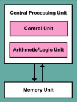
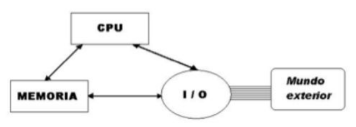

TECNOLOGICO NACIONAL DE MEXICO
INSTITUTO TECNOLOGICO DE SALTILLO
INGENIERIA EN SISTEMAS COMPUTACIONALES
UNIDAD 1
1.1 MODELOS DE ARQUITECTURA DE COMPUTO
1.1.1 CLÁSICAS
Arquitectura Von-Neumann: Es una arquitectura de computadoras que consiste en una unidad de procesamiento (abarca a la UC, la ALU y los registros de procesador), una unidad de control (que abarca al registro de instrucciones y al contador de programas), memoria, almacenamiento, y mecanismos de entrada/salida. La característica distintiva es que la memoria, la cual es de acceso aleatorio, puede almacenar instrucciones y datos, haciendo cualquier implementación de esta arquitectura una computadora de programas almacenados.

Arquitectura Harvard: Es una arquitectura de computadoras similar a la Von-Neumann pero con secciones de memoria independientes para las instrucciones y los datos de la computadora, lo cual implica buses independientes correspondientemente. La versión modificada de esta arquitectura es la que actualmente domina el mercado.

Arquitectura Harvard Modificada: Es la arquitectura de Harvard con la diferencia de que permite el acceso a las instrucciones como si estas estuvieran en la memoria de datos. Aunque hay varios diseños modificados de la arquitectura de Harvard, en una en específico, se vuelven a juntar los espacios de direcciones de memoria pero se conserva la independencia de las instrucciones y los datos al nivel del cache (estando este en un punto intermedio entre el CPU y la memoria). De esta manera, la computadora puede actuar como una máquina Harvard original cuando ejecuta desde el cache y como una máquina von Neumann cuando ejecuta desde la memoria.
1.1.2 SEGMENTADAS
¿Que es?
Es una técnica de implementación por la cual
se solapa la ejecución de múltiples
instrucciones.Hoy día, la segmentación es la
técnica de implementación clave utilizada
para hacer CPU rápidas.
Consiste en la segmentación del procesador
a lo que llamamos “pipeline”,
descomponiendo en etapas para poder
procesar una instrucción diferente en cada
una de ellas y trabajar con variables a la vez. La segmentación es como una línea de ensamblaje: cada etapa de la segmentación completa
una parte de la instrucción. Como en una línea de ensamblaje de automóviles, el trabajo que va
a realizar en una instrucción se descompone en partes más pequeñas, cada una de las cuales
necesita una fracción del tiempo necesario para completar la instrucción completa. Cada uno
de estos pasos se define como etapa de la segmentación o segmento. Las etapas están
conectadas, cada una a la siguiente, para formar una especie de cauce las instrucciones se
entran por un extremo, son procesadas a través de las etapas y salen por el otro extremo.
1.1.3 DE MULTIPROCESAMIENTO
El multiprocesamiento es una tecnología que permite realizar múltiples tareas
simultáneamente en un sistema informático. Esto se hace mediante el uso de
múltiples procesadores o núcleos de procesador que trabajan juntos para
realizar tareas complejas. El multiprocesamiento se utiliza para mejorar el
rendimiento y la eficiencia en la realización de tareas, así como para manejar
tareas grandes y complejas, como simulaciones de modelos, procesamiento de
grandes cantidades de datos y ejecución de aplicaciones con uso intensivo de
gráficos.
Hay dos tipos principales de multiprocesamiento: multiprocesamiento
simétrico (SMP) y multiprocesamiento asimétrico (AMP). En SMP, todos los
procesadores son iguales y comparten la misma memoria y recursos, mientras
que en AMP, los procesadores tienen distintas capacidades y
responsabilidades. SMP (Symmetric Multi-Processing) es un tipo de arquitectura de
computadoras donde dos o más unidades de procesamiento
comparten una única memoria central.
Los sistemas SMP permiten que cualquier procesador trabaje en
cualquier tarea sin importar su localización en memoria.
Cabe destacar que en esta clase de sistemas los distintos
procesadores comparten el mismo bus de salida/entrada o ruta de
datos.
Un sistema asimétrico (AMP o ASMP) es un modelo de
multiprocesamiento donde no todos los procesadores tienen la
misma prioridad. Por ejemplo un sistema puede permitir que solo un
CPU ejecute código del sistema o puede permitir que solo un CPU se
encargue de las operaciones I/O. El procesador encargado de
manejar la memoria es conocido como “procesador maestro” así
utilizando un sistema maestro-esclavo.
1.2 ANALISIS DE COMPONENTES
1.2.1 ARQUITECTURAS
Funciones básicas de un computador:
● Procesamiento de datos
● Almacenamiento de datos
● Transferencia de datos
● Control
1.2.1.1 UNIDAD CENTRAL DE PROCESAMIENTO
Unidad Central de Procesamiento (CPU)
(Central Processing Unit)
A grandes rasgos, controla el funcionamiento del computador y lleva a cabo
sus funciones de procesamiento de datos. Frecuentemente se le llama
simplemente procesador.
1.2.1.2 UNIDAD ARITMETICA LÓGICA
Unidad Aritmético-Lógica (ALU)
(Arithmetic-Logic Unit)
La ALU es la parte del computador que realiza las operaciones
aritméticas y lógicas con los datos. El resto de los elementos del
computador (unidad de control, registros, memoria, E/S) están
principalmente para suministrar datos a la ALU
1.2.1.3 REGISTROS
Registros
● Los registros son las memorias más
cercanas al procesador, son de acceso
rápido y disponen de poca capacidad.
● Almacenan datos, comandos,
instrucciones, entre otros.
● Los registros se miden en bits (entre 4
y 64).
● Se dividen en dos tipos: Visibles por el
usuario; de control y de estado
1.2.1.4 BUSES
Las estructuras de interconexión se encargan de la comunicación
de lectura y escritura entre estos tres módulos, las estructuras
más usadas con diferencia son los buses, los cuales se comunican
a través de varias líneas que transmiten señales binarias, así pues,
un dato de 8 bits se transmite a través de 8 líneas.
1.2.2 MEMORIA
1.2.2.1 CONCEPTOS BASICOS DEL MANEJO DE LA MEMORIA
Es un dispositivo qué puede
almacenar dos tipos de valores
estables en un periodo de tiempo
Un dispositivo capaz de almacenar 1
bit se le conoce cómo celda basica
de memoria
Un dispositivo de memoria son un
conjunto de celdas y circuitos
asociados. Es un dispositivo qué puede
almacenar dos tipos de valores
estables en un periodo de tiempo
Un dispositivo capaz de almacenar 1
bit se le conoce cómo celda basica
de memoria
Un dispositivo de memoria son un
conjunto de celdas y circuitos
asociados
1.2.2.2 MEMORIA PRINCIPAL
Ram (Random
Access Memory): Memoria volátil la cual tiene la capacidad de
leer y escribir datos de manera rápida
Siempre debe de tener una fuente de
poder, sí no los datos almacenados se
perderán
Se divide en memoria dinámica DRAM y
memoria estatica (SRAM).
1.2.2.3 MEMORIA CACHE
Memoria de acceso rápido qué sirve de buffer
entre él procesador y la memoria principal
Utilizada para reducir él tiempo de espera del
procesador para leer los datos más usados o
recientes qué se necesitan en él momento
Es una copia de la información qué se usó en
cada proceso qué ha hecho él procesador.
1.2.3 MANEJO DE LA ENTRADA/SALIDA
Entrada/Salida
● Una computadora no puede estar
formada solo por un CPU y una
memoria
● Para darle alguna utilidad debe de
comunicarse con el mundo exterior a
través del subsistema de entrada/salida
(I/O input/output)
Funciones del Sistema de E/S:
1.DIRECCIONAMIENTO: selección del dispositivo correspondiente de
entre los dispositivos disponibles en el sistema.
2.SINCRONIZACIÓN: ha de posibilitar que la CPU y la memoria (alta
velocidad transferencia de datos) se puedan comunicar con los
dispositivos de E/S (baja velocidad) sincronizando los envíos de datos
entre ambos.
3.TRANSFERENCIA: el sistema E/S debe de tener toda la circuitería y
señales de comunicación apropiadas para llevar a cabo la
comunicación con cada uno de los dispositivos del sistema.

1.2.3.1 MODULOS DE ENTRADA/SALIDA
La E/S se implementa mediante dispositivos periféricos.
•DISPOSITIVO PERIFÉRICO:
•Elementos que permiten la transferencia de información entre la
CPU y el mundo exterior.
•Interfaz que traduce la información asíncrona y analógica del mundo
exterior a la información síncrona y codificada del computador.
•Dos partes: módulo de E/S y dispositivo (externo).
Coordina el correcto flujo de información entre uno o varios
dispositivos externos (impresora, monitor, ...) e internos (memoria,
procesador).
FUNCIONES:
1. Reconocer la dirección de la CPU que identifica al dispositivo externo.
2. Transferencia de datos entre el CPU y el dispositivo externo.
3. Recepción comandos desde el CPU.
4. Mantener información del estado del periférico y mantener el
protocolo de comunicaciones con el periférico.
1.2.3.2 ENTRADA/SALIDA PROGRAMADA
● El CPU tiene el control absoluto de la operación de E/S: inicia y lleva a cabo la
transferencia.
● La CPU está dedicándose por completo a realizar la operación de E/S: realiza
tanto la comprobación de estado como la transferencia y la inicialización:
poco eficiente.
● Hardware mínimo.
1.2.3.3 ENTRADA/SALIDA MEDIANTE INTERRUPCIONES
La E/S le indica al CPU cuando está preparada para transferir datos
(genera una interrupción al CPU), activando una línea especial
conectada al CPU (línea de interrupción).
Funcionamiento:
1.El procesador ejecuta instrucciones de un programa. Al finalizar
cada instrucción comprueba si se ha producido una interrupción.
2.En caso afirmativo se salva el estado actual del programa
(contador del programa y registros) y se salta a ejecutar la rutina
de servicio correspondiente.
3.La rutina de servicio efectúa las operaciones apropiadas en la E/S
para realizar la transferencia de datos solicitada.
4.Al finalizar la rutina de servicio se recupera el estado de la CPU y
se continúa ejecutando el programa que se estaba ejecutando
antes de la interrupción.
Las interrupciones pueden ser:
•ENMASCARABLES (se pueden dejar de atender por software)
•o NO ENMASCARABLES (siempre atendidas).
Dos formas de conocer la dirección/posición (vector) donde se
encuentra la rutina de servicio de la interrupción:
•Vector de interrupciones siempre FIJO
•ó el periférico suministra el vector de interrupción.
Generalmente existen VARIOS PERIFÉRICOS (y no uno sólo)
conectados que pueden realizar interrupciones,
•Esto obliga a ESTABLECER PRIORIDADES y decidir cómo se conectan
a la CPU.
•También hay que determinar para cada periférico su vector de
interrupciones.
1.2.3.4 ACCESO DIRECTO A MEMORIA
El DMA (Direct Memory Access) es un procesador/controlador
especializado en transferencias “muy grandes” desde periféricos a
memoria y viceversa.
•Es programable. La CPU no realiza ninguna tarea (salvo programar
el DMA) ya que la inicialización y transferencia son gobernadas por
el periférico.
Para programar el DMA hay que enviarle al menos los siguientes
datos:
•Dirección/puerto periférico E/S.
•Posición/dirección en memoria principal.
•Tamaño (número de bytes a transferir).
•Tipo transferencia: lectura o escritura.
•Al finalizar el DMA avisa mediante una interrupción.
•Esta interrupción al igual que el resto de interrupciones son
normalmente atendidas al final de cada instrucción.
•La rutina de servicio asociada comprobará el estado del DMA para
ver si se han producido errores al ejecutar la transferencia que se
le ha encomendado
1.2.3.5 CANALES Y PROCESADORES DE ENTRADA/SALIDA
•Siguiente evolución en los sistemas de E/S: tener un procesador
capaz de interpretar secuencias de operaciones y de esa forma
tener bajo su control un mayor número de operaciones y módulos
de E/S, cada vez más complejas.
•El canal de E/S es un “pequeño” procesador especializado en
operaciones de E/S. Si además tiene memoria propia, entonces se
lo llama procesador de E/S.
•Para realizar una transferencia de E/S, la CPU primero ha de indicar
qué canal de E/S ejecuta un determinado programa.
•La CPU también debe definir el área de almacenamiento temporal,
establecer una prioridad y establecer las correspondientes
acciones en caso de error.
El programa a ejecutar está cargado en memoria principal y puede
contener instrucciones propias sólo procesables por el canal de
E/S.
•Después de terminar la operación de E/S, el canal de E/S deja el
resultado en un área de memoria y a continuación genera una
interrupción para indicar que ha acabado.
1.2.4 BUSES
1.2.4.1 TIPOS DE BUSES
En paralelo:
Es un bus en el cual los datos son enviados por bytes al mismo tiempo, con la
ayuda de varias líneas que tienen funciones fijas.
En serie:
En este los datos son enviados de bit a bit y se reconstruyen por medio de
registros o rutinas de software.
1.2.4.2 ESTRUCTURA DE LOS BUSES
● LÍNEAS DE DATOS: Caminos para transferir datos entre el resto de
componentes de un computador.
● LÍNEAS DE DIRECCIONES: Designan la
posición/dirección de los datos.
● LÍNEAS DE CONTROL: Controlan el
acceso y uso de los buses anteriores.
1.2.4.3 JERARQUIA DE LOS BUSES
1.2.5 INTERRUPCIONES
Una interrupción (del inglés Interrupt
Request, también conocida como
petición de interrupción) es una señal
recibida por el procesador de un
ordenador, indicando que debe
"interrumpir" el curso de ejecución
actual y pasar a ejecutar código
específico para tratar esta situación.
No forma parte
del programa,
sino que
pertenece al
sistema
operativo o al
BIOS. Una vez
finalizada dicha
subrutina, se
reanuda la
ejecución del
programa.
Interrupciones de Hardware:
Division por cero
“Ejecución paso a paso”
“No enmascarable”
“Punto de ruptura”
“Desbordamiento”
“Dispositivo no disponible”
Interrupciones por Software:
Son aquellas generadas por un
programa en ejecución.
“Interrupciones de la BIOS”
“Interrupciones de DOS”
“Interrupción de Dato Exterior”